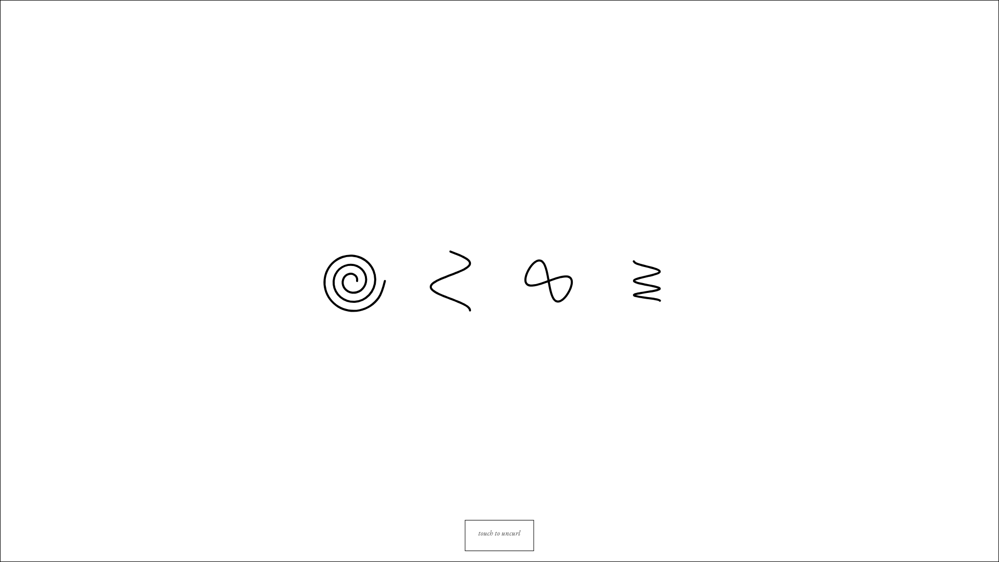
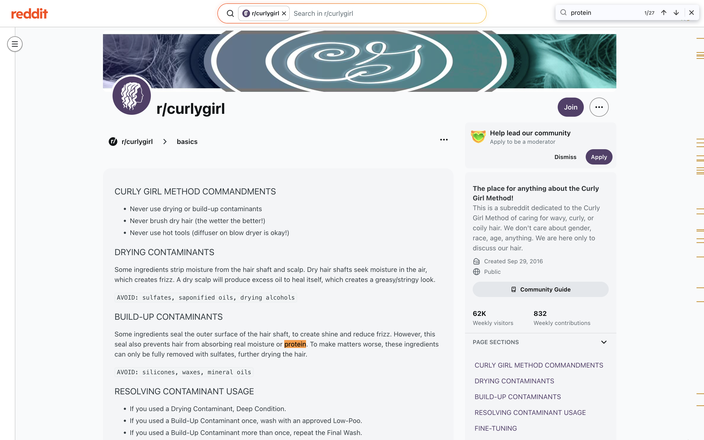
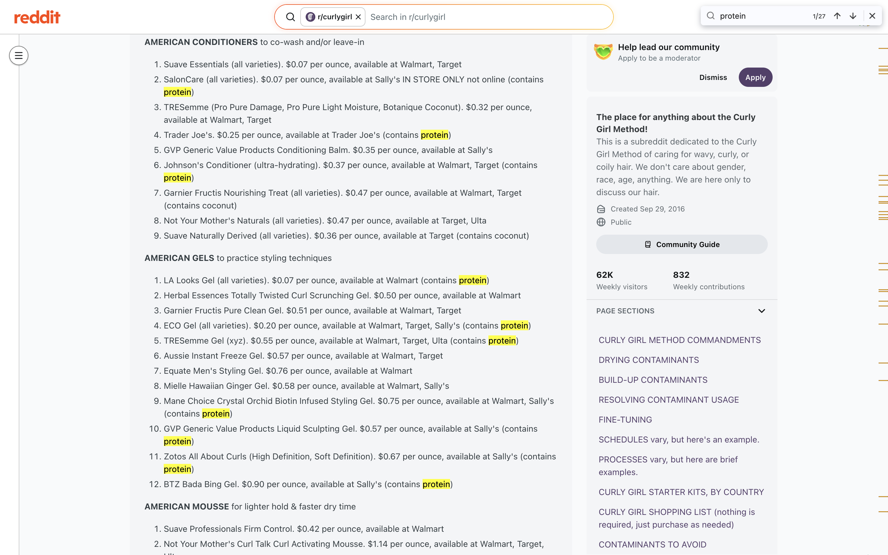
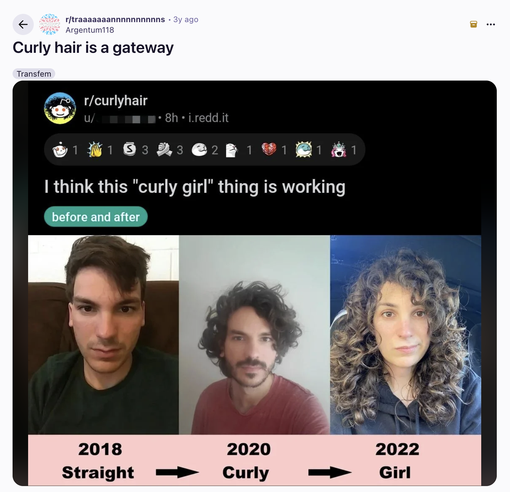

Curl is a scroll-driven net art piece that maps a life through the territory of hair. The page becomes a slow vertical atlas, hairstyles as cartography, each region a small country with its own weather, its own grammar of belonging. Pompadour, Zeroth, Mohawk, Pro, Rambo, Skrillex Sprawl, Frizz, Minarets, Pineapple. The visitor scrolls; the head turns; the biography of a scalp unfolds.
Hair has always been the place where I negotiate masculinity. The claw I keep is half stalling, half compromise. Not short enough to belong to the men in my family, not long enough to belong to the women. Curl takes that quiet negotiation and lays it on a map. Each style is annotated like a place I once lived in. Some I left. Some I never left. The scroll moves the way a hand moves through hair: searching, deciding, deciding again.



The piece runs in the browser. EB Garamond on bare white, a Leaflet map underneath the scroll, the hairstyle regions drawn as territories with their own borders. The map is not satellite imagery, it is the scalp made strange. The implicit promise is that if you scroll long enough, you will reach the rest of the body. Curl refuses to keep that promise. The atlas ends where the hair ends.
At the 2026 New Media Writing Prize, Curl received the Chris Meade Memorial Prize Honourable Mention and was shortlisted in the Opening Up and Social Good categories. The Awards Evening was held online out of Loughborough on May 13th, 2026; the announcement came on May 15th. The Chris Meade Memorial Prize is named after the co-founder of the prize, a tireless advocate for digital writing who passed in 2022; the Honourable Mention here means a lot to me. The full awards evening recording is on YouTube.